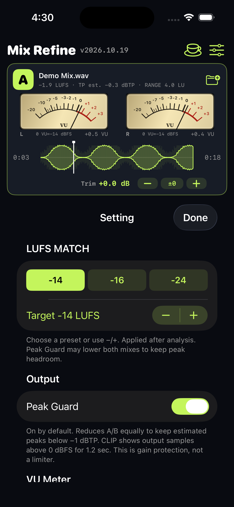

THE LISTENING GUIDE
読み込む。揃える。聴き比べる。
アプリの英語表記と一緒に、基本操作を紹介します。音源はご自身のファイルを使ってください。
01IMPORT YOUR FILES
音源を準備する。
A / B → Folder → Import from Files
- AとBのフォルダーボタンを押し、「ファイル」から音源を選びます。片方の音源だけでも再生できます。
- iCloud DriveやDropboxは、先に「ファイル」アプリからアクセスできる状態にしておきます。
- 再生準備が終わるとPlayで聴けます。LUFS解析はその後も裏で進みます。ファイルの形式・長さにより待ち時間は変わります。
02MATCH THE LOUDNESS
音量を合わせる。
Done → LUFS MATCH → Setting → Target
- 解析のDone表示を確認し、左下のLUFS MATCHをオンにします。
- 右上の設定ボタンでSettingを開き、LUFS MATCHのTargetを選びます。初期値は−14 LUFSです。
- 同じTargetでA/Bを切り替え、音色やバランスを比較します。Peak Guardが両方をさらに下げる場合があるため、Targetは最終出力の実測値を保証するものではありません。
- MATCH中の音源差し替えでは、新しい音源の解析と音量合わせが完了するまで旧音源を保持してから切り替えます。

LUFS MATCHのプリセットとTarget調整。画面は開発版の例です。03FOCUS YOUR LISTENING
聴く視点を切り替える。
A / B · Trim · Auto Select · DIMMER
- A/Bの選択ボタン、またはカード左上のA/Bで再生する音源を切り替えます。
- Trimは各音源を微調整します。−／＋で変更し、±0でその音源のTrimを0 dBに戻します。
- Auto Selectは準備済みのA/Bを一定間隔で切り替えます。間隔はSettingで調整。再タップで解除できます。
- DIMMERは最終的に聴く音量だけを下げます。初期の減衰量は−10 dBで、Settingから変更できます。
04FIND THE SAME MOMENT
聴きたい場所へ戻る。
Waveform · Cue · CUE CLEAR · SYNC
- 波形をタップまたはドラッグして再生位置を移動。頭出しと10秒戻る／進むボタンも使えます。
- Cueは初回タップで現在位置を記憶し、以後は記憶した位置から再生します。CUE CLEARで記憶を解除します。
- SYNCをオンにすると再生位置を揃えます。長さの異なる2音源では、長い方の終わりまで短い方をループします。
- SYNCがオフのとき、シークは選択中の音源だけに作用します。
05LISTENING MODES
6つのモードを、目的に合わせて。
Stereo
左右をそのまま再生。通常の聴き比べに。
Mono
LとRを足して両耳へ。モノでのまとまりを確認。
L Mono
左チャンネルだけを、両耳で聴きます。
R Mono
右チャンネルだけを、両耳で聴きます。
Mid
(L＋R)/2を両耳へ。共通する成分を確認。
Side
(L−R)/2を両耳へ。左右の差の成分を確認。